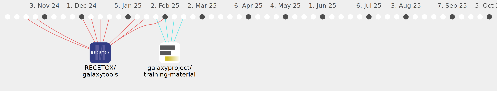

KristinaGomoryova

Commits all-time: 198
Commits last year: 137

(104)
- 2e23ebf
- f70d3f0
- 2778854
- 699b3b9
- 004c8f3
- 50c767a
- 5122b8e
- 26c445d
- 594bd3e
- 712e0f0
- 53c0c90
- cc5048d
- c55a1af
- 0c8bbe1
- 4d8e584
- 8b5bd4d
- 5217d13
- 320549e
- 5e6f911
- f2b2eef
- c038540
- 3c679d1
- 330af81
- 90759d3
- 177b155
- fa0f295
- c7a2b4a
- 210fe93
- 51b1726
- 1575646
- 1e34240
- 5c89fe4
- 6e48b5f
- c1ea017
- eca415a
- f0badcc
- 59d933d
- f936cb4
- b4d95ed
- 0041081
- abf8f7c
- 66ae9d6
- 1923445
- 4f0a166
- c292e7d
- 84c0c61
- a6e5a40
- 900d55a
- cf88b2f
- 8e3c91d
- cbaa24a
- c91fe0b
- 4149ae3
- 70e68e6
- fa65f0a
- 0f1fdda
- 93c531a
- f9bfd9f
- 61e8751
- 1e29b19
- adb9528
- 162a446
- 76251f8
- 77605d1
- ba66811
- 48e5323
- 212f992
- 43012b0
- 7d74a2a
- ba4f0e2
- 798651b
- a8015d0
- 76b9cb5
- 9b18c3e
- 6ef1e99
- cbc7122
- c99c693
- c954ea6
- 5276c78
- f0a6929
- 3228192
- a5153c6
- d1772be
- 1d27c5d
- 1799c28
- 5757ba0
- ad6d2cb
- 50c8f77
- f497a21
- 489c178
- 5b0e66e
- 2610ed7
- 64d9060
- 76ae91c
- 2c66332
- 23b8895
- 98b5339
- 732c516
- ccd544e
- 0358700
- 150ecfc
- 241b42f
- 109d2aa
- 8ea9dfc
(33)